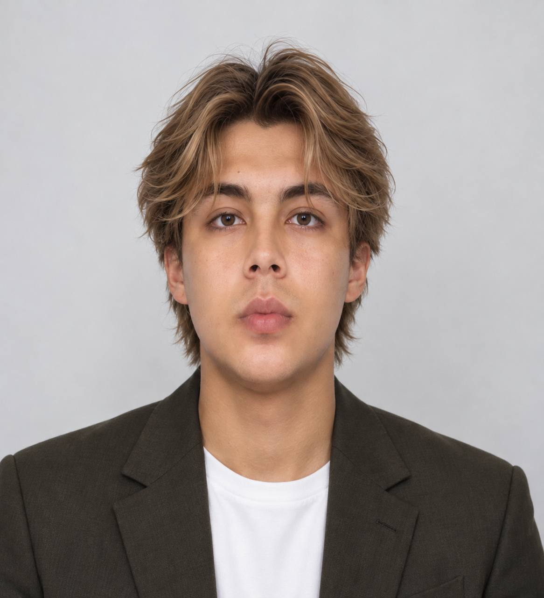
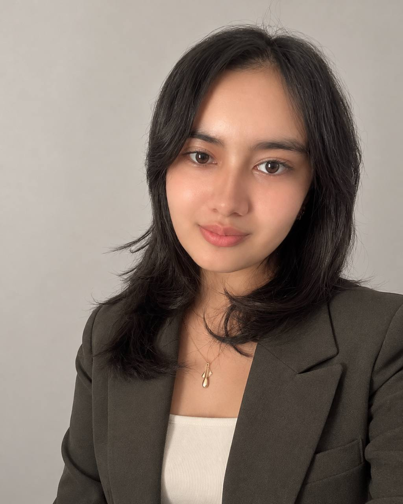
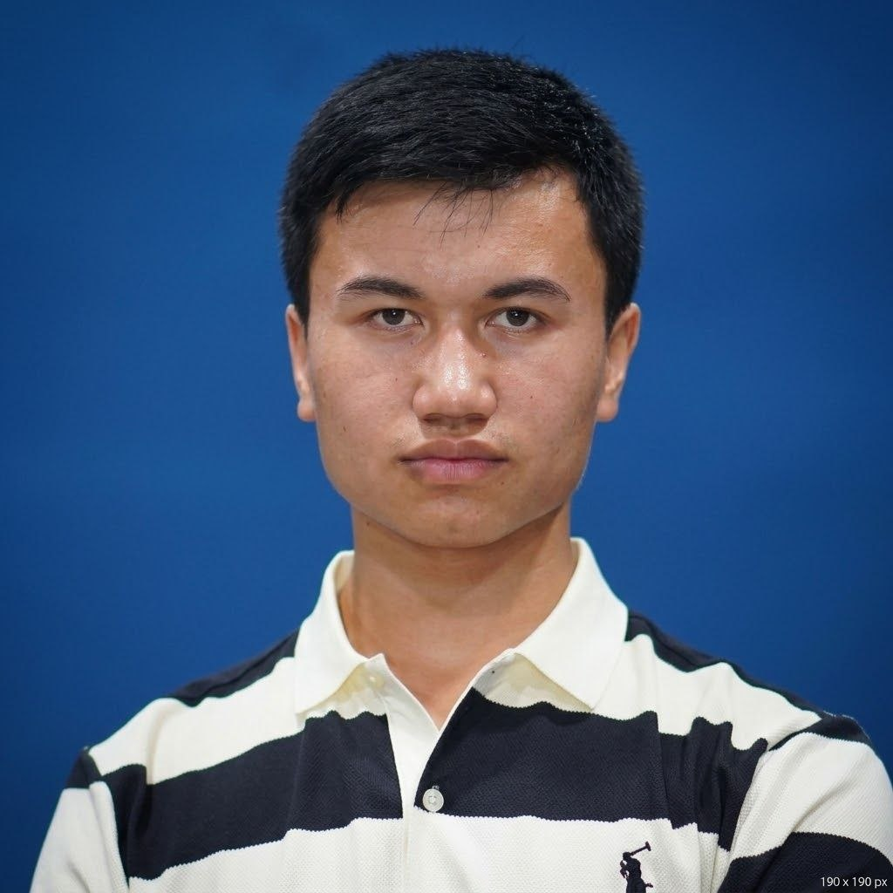
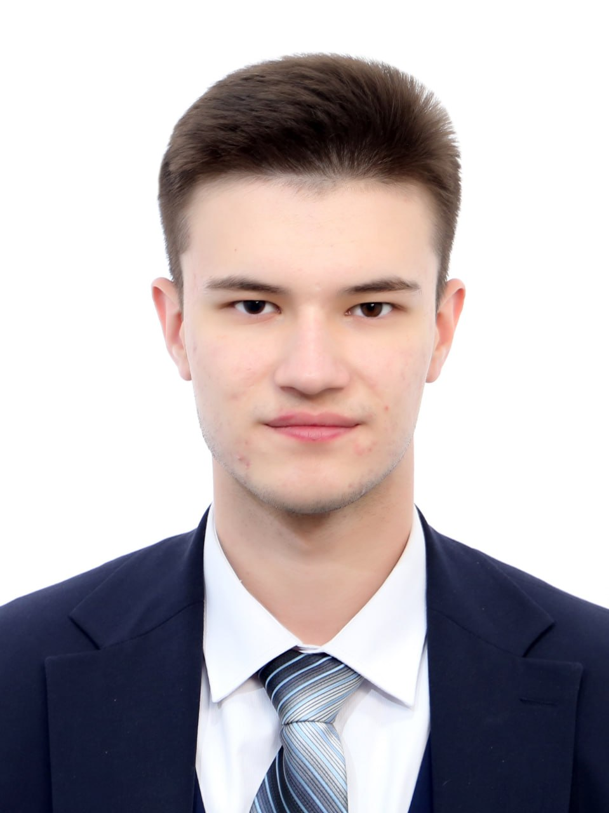
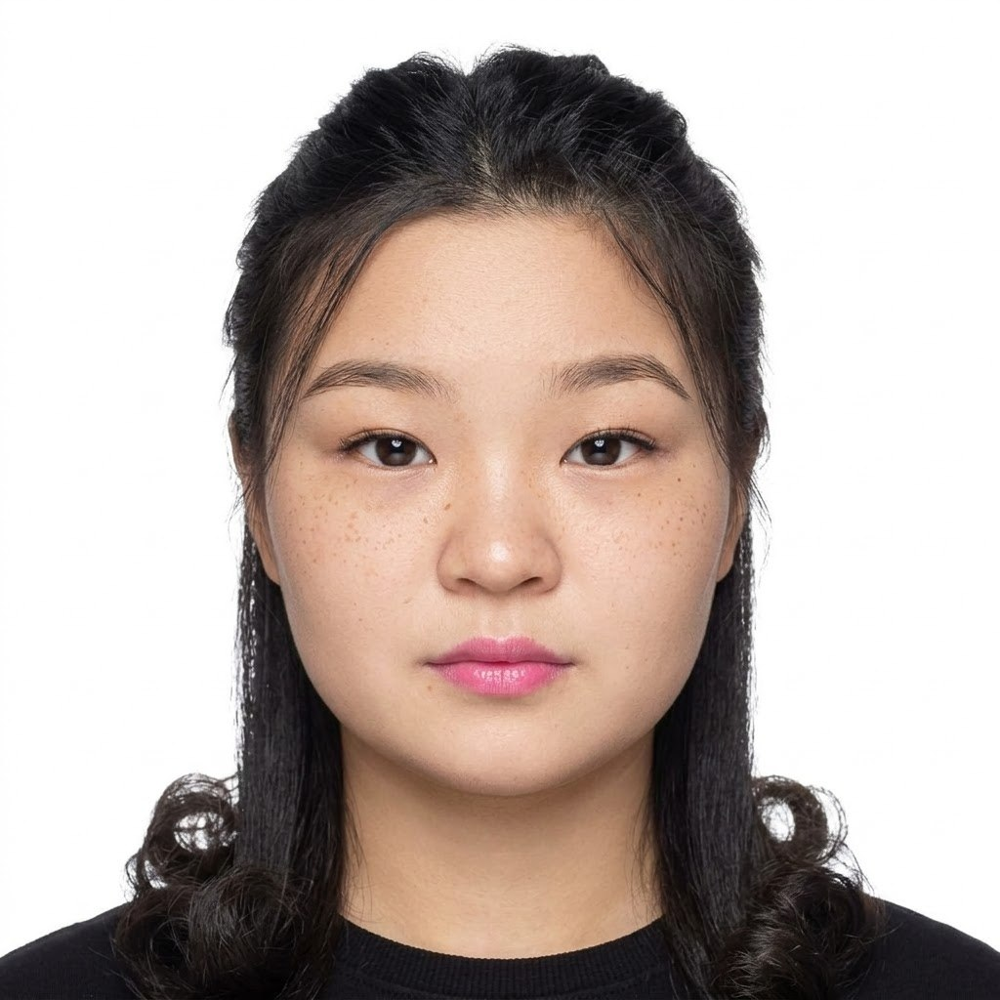
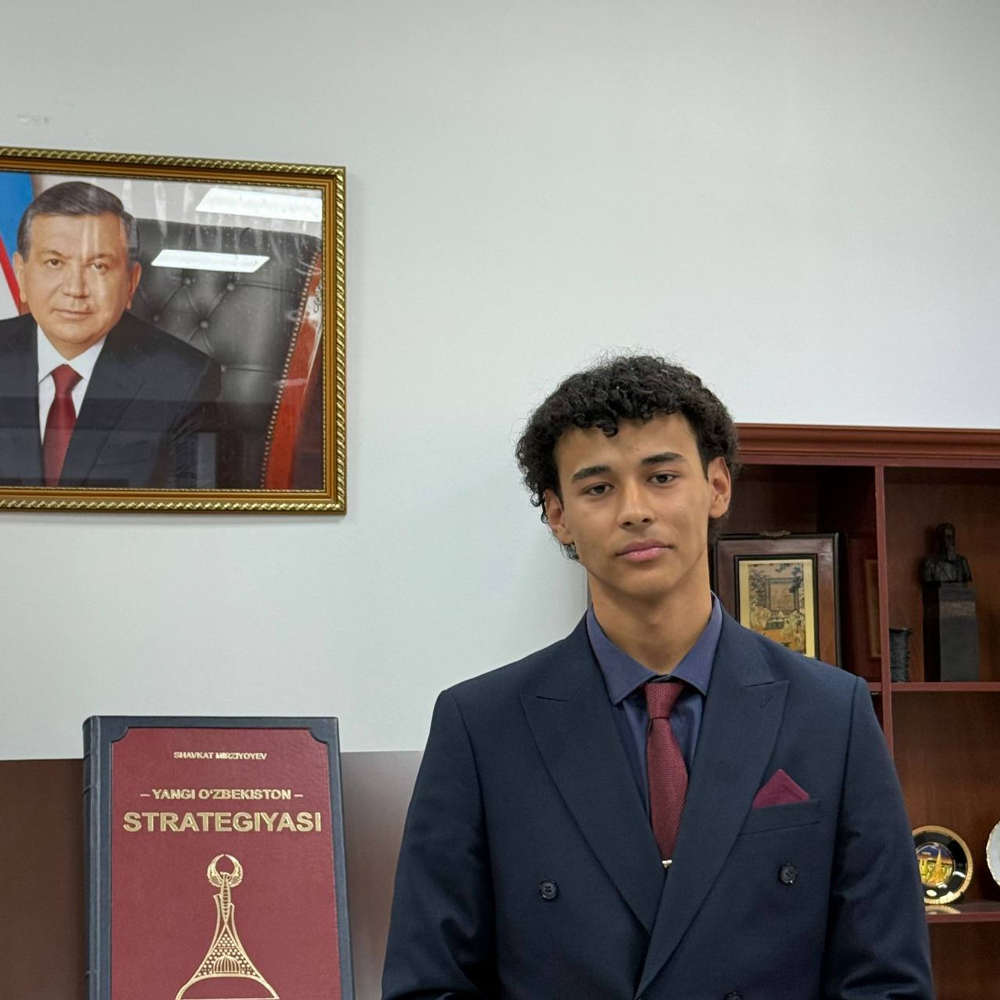
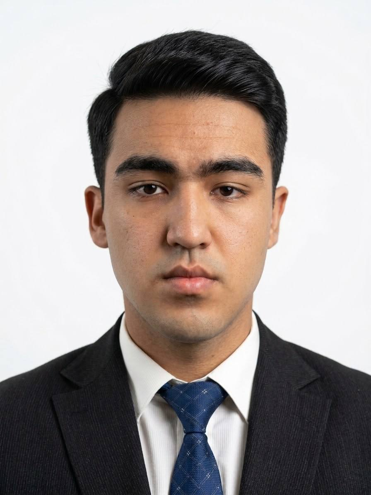
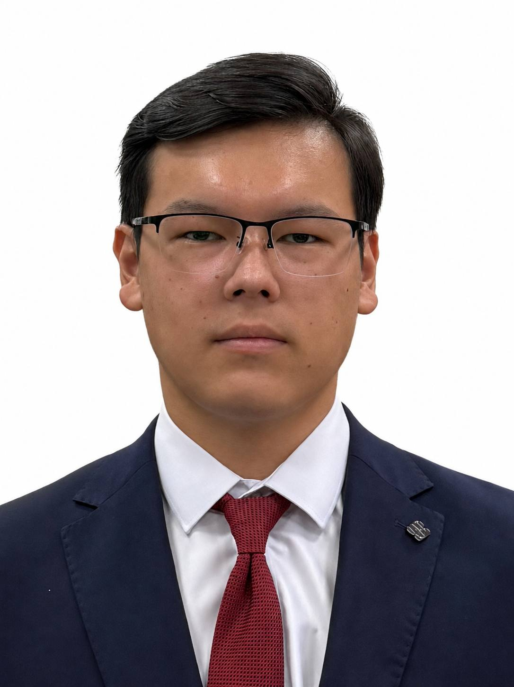
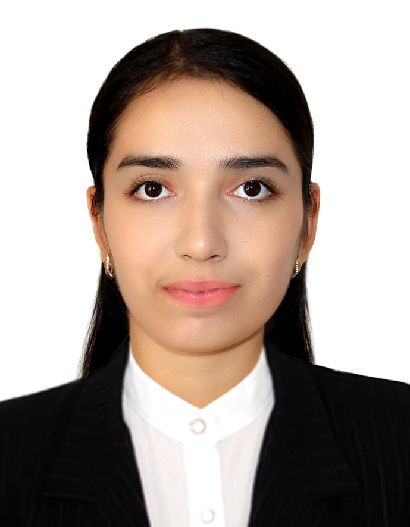

We unite people of different backgrounds

Chancellor
«Руководство и стратегическое развитие NewBridge Community»
Канц-секретарь и первый заместитель канцлера
«Обеспечение оперативного взаимодействия и поддержка стратегических инициатив Канцлера».
Head of Media Team / Media Director
Responsible for managing and developing NewBridge's media presence, content creation, social media, and PR strategy. Motivated and multilingual leader passionate about strategic communication.
Гендиректор по внешним отношениям и сотрудничеству
«Сотрудничество с другими студенческими клубами, университетами, организациями, поиск спонсоров и инвесторов. Качества: дисциплина, менеджмент, планирование, опытный участник МУНов».
Заместитель гендиректора по внешним отношениям и сотрудничеству
«Сотрудничество с другими студенческими клубами, университетами, организациями, поиск спонсоров и инвесторов. Ответственная, трудолюбивая, целеустремленная и креативная».
Генеральный директор по организации ивентов
«Планирование, организация и проведение уникальных мероприятий NewBridge Community».Координатор / Зам. гендиректора по ивентам
«Владею 4 языками. Стремлюсь к развитию, новым знакомствам и вдохновляющим проектам. Открыт к общению и полезному сотрудничеству».Координатор / Зам. гендиректора по ивентам
«Владею 3 языками. Гибкий, энергичный и ответственный. Быстро вливаюсь в работу и привношу креативные идеи».
Генеральный директор по Community & Volunteers
«Приём и первичная организация новых волонтёров и работников, ведение внутренней базы работников и волонтёров».
Заместитель гендиректора по Community & Volunteers
«Приём и первичная организация новых волонтёров и работников, ведение внутренней базы работников и волонтёров. Опыт работы в NewBright Club».
Главный секретарь
«Я обладаю хорошими навыками в общении с людьми, очень ответственна, люблю организационную работу и взаимодействие с людьми».Assistant & Mobile Videographer
Personal assistant to Media Director. Responsible for capturing high-quality mobile photos/videos, visual content creation, and media coverage of events.